1704 BURNING TREE DRIVE
WALKING DISTANCE TO SILVER LINE METRO AND WESTWOOD DISTRICT:
Two trails to Springhill metrorail and Westwood restaurant district:
1. Vesper trail (paved and lighted, scheduled to open soon)
2. Paved trail now open at Higdon near Pebble Beach Dr.
2018 FAIRFAX COUNTY ASSESSED VALUATION:
$734,550
PRICE:
$744,550
Offering a rare opportunity to acquire a move-in-ready Tysons home in an oustanding location for only $10k above assessment.
SURVEY:
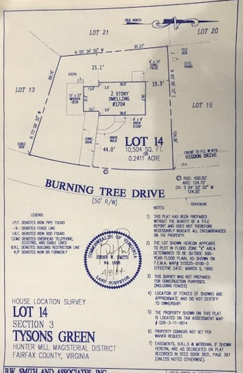
PICS:
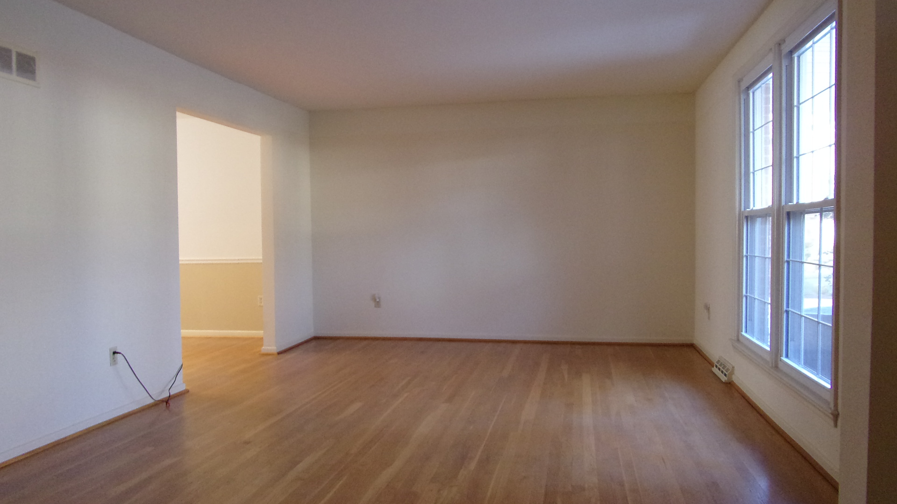
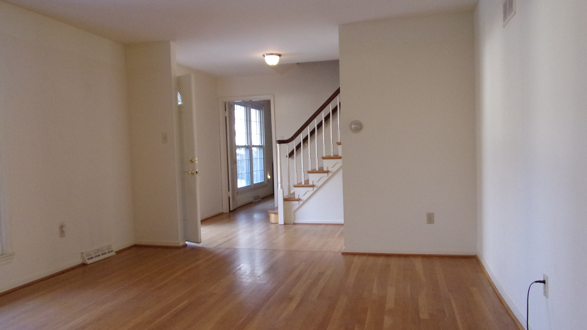
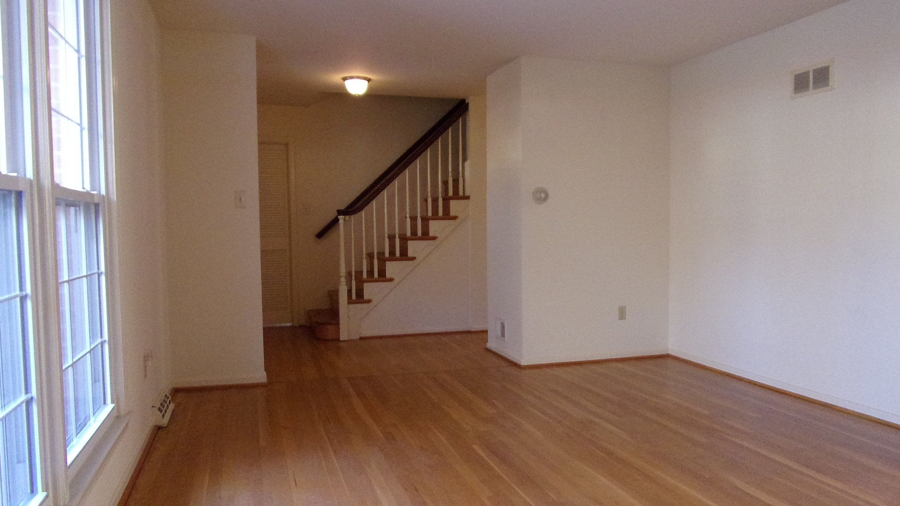
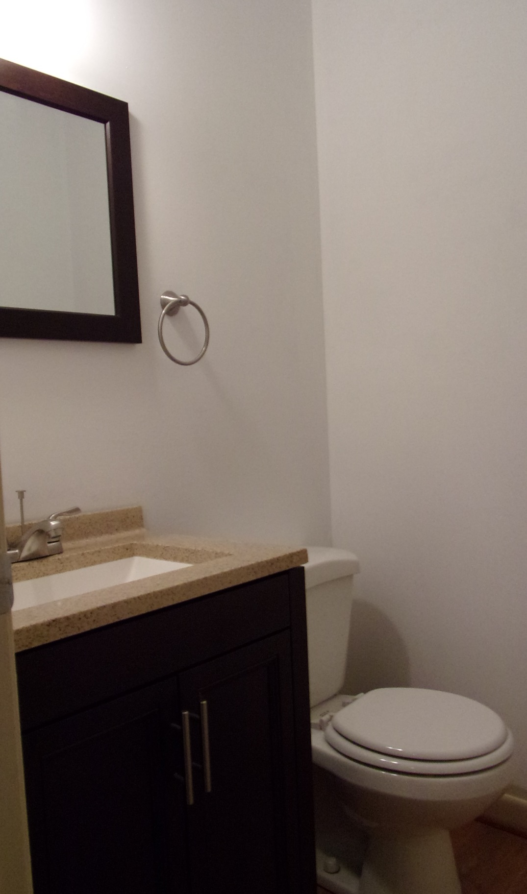
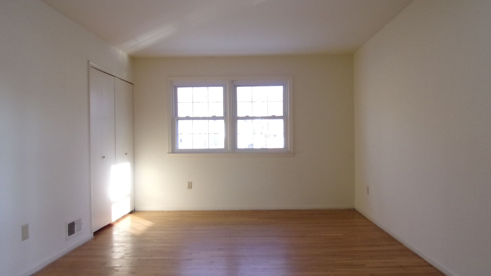
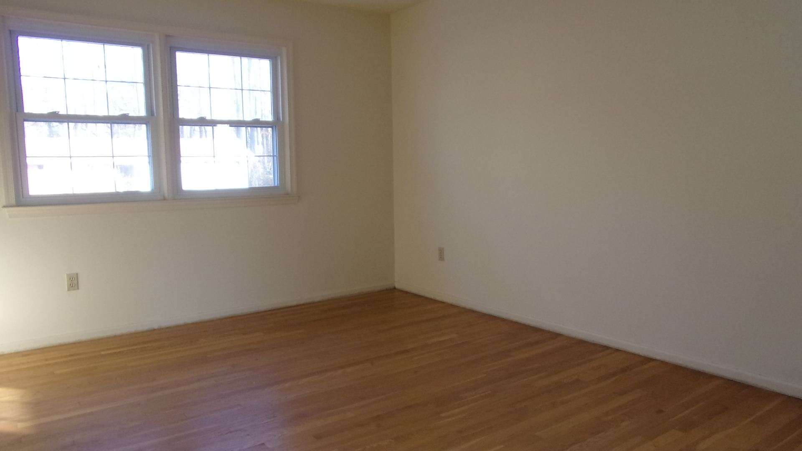
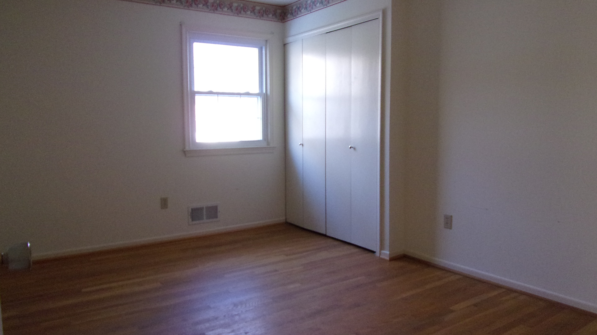
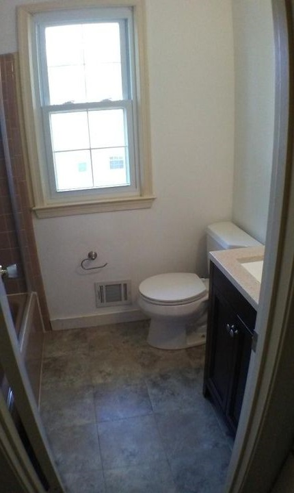
WALK TO SPRINGHILL METRO:
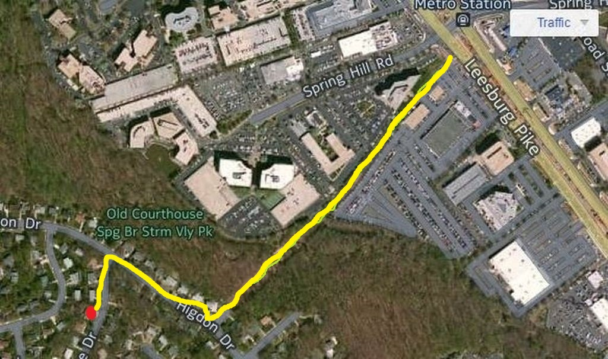
PROPOSED ADDITIONAL TRAILS:
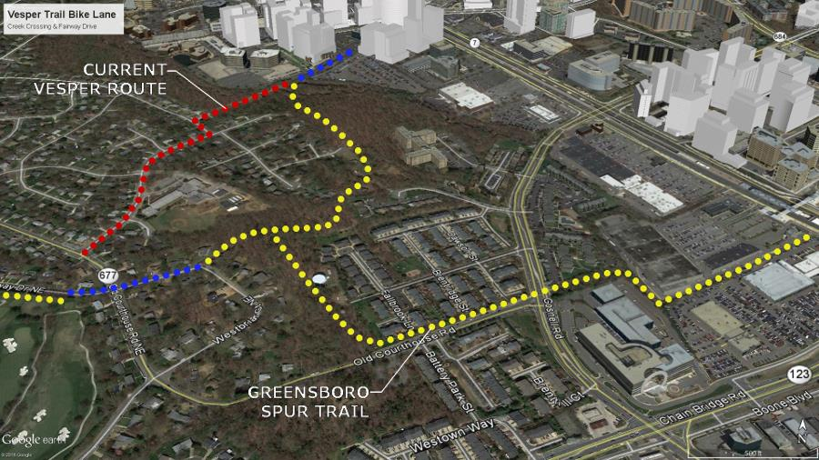